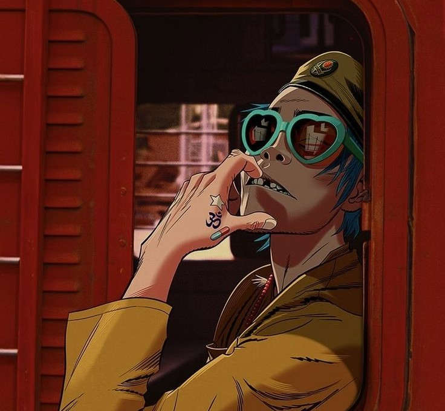
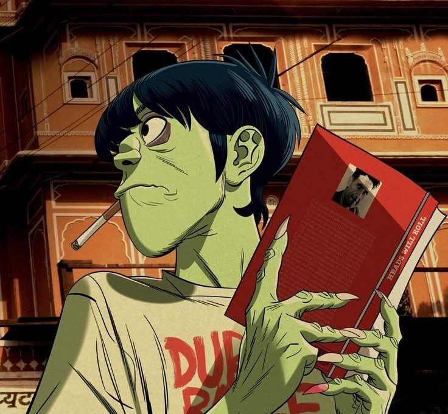
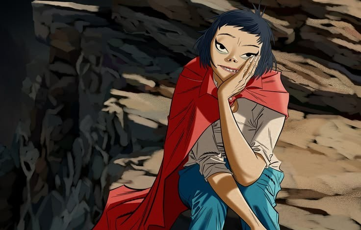
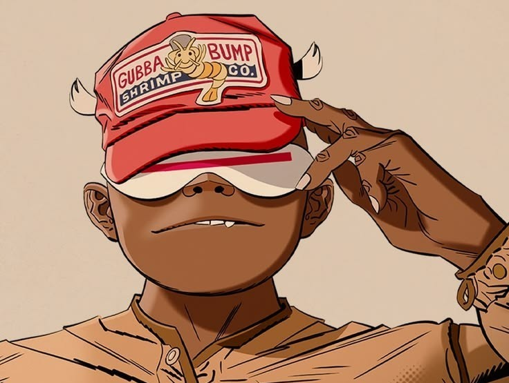

ARCHIVO 002 / INTEGRANTES
Los integrantes
Cuatro personalidades muy diferentes forman parte de Gorillaz. Cada integrante tiene su propia historia, una identidad particular y un papel dentro de la banda. Conocé a los personajes que dan vida a este universo ficticio.

ARCHIVO 001 / VOCALISTA
2-D
Nombre real: Stuart Pot.
Personalidad: Amable, distraído, ingenuo y algo despistado.
Características: Alto y delgado, con cabello azul y ojos negros.
Rol en la banda: Vocalista principal y tecladista. También toca el piano ocasionalmente.

ARCHIVO 002 / BAJISTA
Murdoc Niccals
Nombre real: Murdoc Fausto Niccals.
Personalidad: Arrogante, sarcástico, provocador y egocéntrico.
Características: Piel verdosa, nariz torcida, dientes afilados y una sonrisa amplia.
Rol en la banda: Bajista, fundador y autoproclamado líder de Gorillaz.

ARCHIVO 003 / GUITARRISTA
Noodle
Nombre real: Noodle.
Personalidad: Reservada, independiente, alegre, reflexiva y decidida.
Características: De origen japonés, cabello oscuro y ojos negros almendrados.
Rol en la banda: Guitarrista, corista y tecladista ocasional.

ARCHIVO 004 / BATERISTA
Russel Hobbs
Nombre real: Russel Hobbs.
Personalidad: Maduro, tranquilo, amable, educado y protector.
Características: De gran contextura física, piel oscura y cabeza rapada.
Rol en la banda: Baterista y percusionista. Aporta una fuerte influencia del hip-hop.